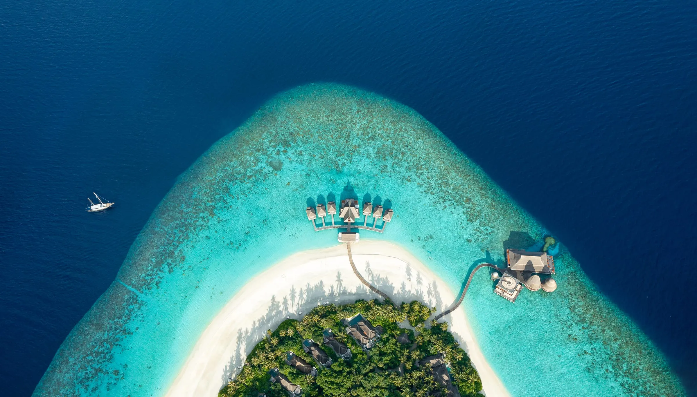

Hải trình ngày 2
Bãi Biển Kỳ Co — Maldives Thu Nhỏ Của Việt Nam
Được mệnh danh là đệ nhất bãi tắm Quy Nhơn, Kỳ Co mê hoặc du khách bởi dải cát trắng mịn màng ôm trọn làn nước biển trong suốt có thể nhìn thấy đáy cát. Hành trình đưa du khách lướt cano cao tốc vượt sóng, lặn ngắm rạn san hô rực rỡ tại Hòn Sẹo và tận hưởng bầu không khí biển cả hoang sơ hiếm có.
Xem vị trí trong lịch trình